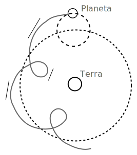
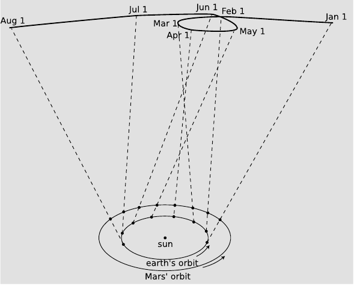
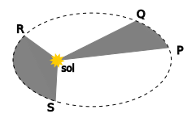
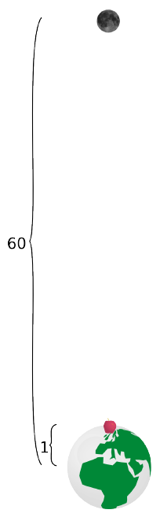
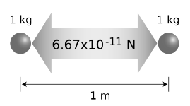
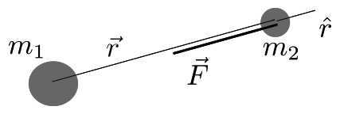
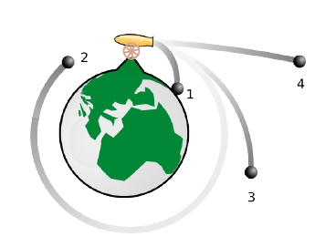
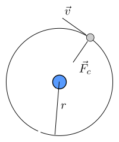
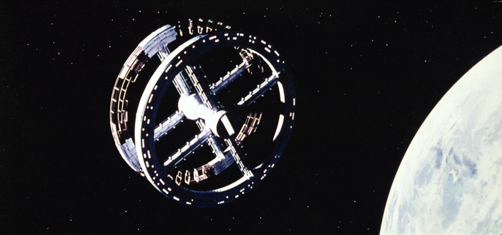
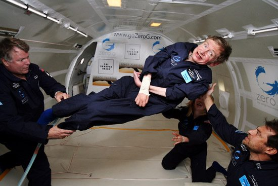

Planetes i satèl·lits
Dos visions de l’univers
Des del segle IV AC fins al segle XVII la visió de l’univers ha estat la s’havia heretat d’Aristòtil. L’univers aristotèlic es dividia en dues regions ben diferenciades. La regió sublunar era la regió interior, que abastava des del centre de la Terra fins a l’òrbita lunar. La resta de l’univers finit era la regió supralunar, que s’estenia des de l’òrbita de la lluna fins a l’esfera de les estrelles. Més enllà de l’esfera de les estrelles ni hi havia res, ni tan sols l’espai. Tots els objectes de la regió supralunar estaven fets d’un material incorruptible anomenat èter. L’èter tenia la tendència natural a moure’s al voltant del centre de l’univers en cercles perfectes. Tot era regular, perfecte i incorruptible en la regió supralunar. Pel contrari, la regió sublunar estava caracteritzada per la imperfecció: el canvi, el creixement i la decadència, la generació i la corrupció.Totes les substàncies de la regió sublunar estaven composades per quatre elements: aire, terra, foc i aigua i les proporcions relatives d’aquests elements en una mescla determinaven les propietats de la substància així constituïda. Cada element tenia el seu lloc natural a l’univers. El lloc natural de la terra era el centre de l’univers; el lloc de l’aigua era la superfície de la Terra; el de l’aire la regió que hi ha immediatament damunt la superfície de la Terra; i el del foc la part superior de l’atmosfera, prop de l’òrbita de la Lluna.
Cada objecte terrestre tenia un lloc natural segons les proporcions del quatre elements que contingués. Les pedres per contenir majoritàriament terra tenen el seu lloc natural al centre de l’univers, i això explicava que quan deixem anar una pedra té la tendència a anar al seu lloc natural i, per això, cau. Les flames estan constituïdes majoritàriament per foc i, per això, tenen tendència a anar cap amunt. Aquests són moviments naturals. Tots els moviments que no són naturals necessiten una causa. Les fletxes necessiten ser llançades per un arc i els carros tirades per cavalls.
Seguint les línies traçades per l’ideari aristotèlic, Ptolemeu al segle II va crear un sistema astronòmic detallat que establia les òrbites de la Lluna, el Sol i tots els planetes. El sistema geocèntric creat per Ptolemeu tenia alguns problemes per a descriure el moviment dels planetes. Per exemple, era ben conegut que el moviment del planeta Mart al cel presentava una trajectòria estranya, semblava avançar sobre el cel durant un temps per a desprès retrocedir i tornar a avançar després. Aquest fet no tenia explicació dintre del model i Ptolemeu va tenir que afegir un artifici: els epicicles. D’aquesta manera els planetes durant el seu moviment circular al voltant de la Terra anaven fent cercles al voltant de la trajectòria circular.

Durant les primeres dècades del segle XVI, Copèrnic va idear una nova astronomia on la Terra es movia i qüestionava la visió aristotèlica-ptolemaica. En aquest nou sistema el centre de l’univers estava ocupat pel Sol i tant la Terra con la resta d’astres es movien al seu voltant. Aquest model heliocèntric canviava el centre de l’univers i deixava de donar el seu protagonisme a l’ésser humà, l’home deixava de ser la gran creació de Déu. Aquesta revolució va produir molts problemes amb l’església catòlica.

El model de Copèrnic va tardar en imposar-se, en aquella época un astrònom danès, en Tycho Brahe, era qui tenia les millors dades d’observació astronòmiques existents (recordem que encara no s’havia inventat el telescopi). Brahe volia fer servir les seves dades per a demostrar la validesa del model geocèntric. A la seva mort va deixar tots els seus arxius al seu ajudant Johannes Kepler que va analitzar les dades i va confirmar la validesa del model copernicà i va anar més enllà descobrint tres lleis que van revolucionar la visió de l’univers.
Lleis de Kepler
Primera llei de Kepler
Les òrbites dels planetes són el·lipses amb un dels focus situat al centre del Sol.
Segona llei de Kepler
El segment que uneix el centre del Sol i el de la Terra escombra àrees iguals en temps iguals.

Tercera llei de Kepler
El quadrat del temps que tarda un planeta a descriure la seva òrbita és directament proporcional al cub del semieix major de la seva òrbita.
Si designem com T al temps que tarda la Terra en completar una òrbita al voltant del Sol, anomenat període de l’òrbita, tenim que la tercera llei de Kepler es pot enunciar matemàticament de la manera següent:
on a és la longitud del semieix major de l’òrbita.
Llei de gravitació universal
Quin raonament va seguir Newton per a deduir la seva llei de gravitació?
Si analitzem el cas d’un moviment circular
Newton sabia que la llei fonamental per a la força no podia dependre de la velocitat perquè els cossos no són més pesats pel seu estat de moviment. La velocitat ha de dependre d’altres magnituds, per a un moviment circular:
on $r$ és el radi de l’òrbita i $T$ el període.
D’aquesta manera l’expressió de la força queda:
Utilitzant la tercera llei de Kepler per a una òrbita circular: $T^{2}\propto r^{3}$
La força que el Sol exerceix sobre els planetes és inversament proporcional al quadrat de la distància.
Les forces entre els cossos celestes són del mateix tipus que les forces entre els cossos de la Terra (síntesi newtoniana).
Newton va tenir una idea genial per a verificar aquesta hipòtesi:
on $k$ s’ha d’interpretar com una constant de proporcionalitat. De la segona llei de Newton $a=F/m$ obtenim
En l’època de Newton ja se sabia que la distància Terra-Lluna era 60 vegades el radi de la Terra (Hiparc, 150 AC).

Per a validar la seva hipòtesi Newton havia de verificar que l’acceleració de la Lluna era $3600=60^{2}$ més petita que l’acceleració de la poma ($9,8\,\mathrm{m/s^{2}}$). Va determinar l’acceleració de la Lluna fent servir: $a=v^{2}/r$ i efectivament va comprovar que era 3600 vegades més petita que $9,8\,\mathrm{m/s^{2}}$! Newton havia trobat uns dels secrets millor guardats per la natura!
Per altra banda, per a que sigui vàlid el principi d’interacció (acció i reacció), la força havia de ser simètrica respecte del cossos que interactuaven, per tant, la intensitat de la força també depèn del cos que la produeix. Per tant, la magnitud de la força ve donada per l’expressió següent:
on $G$ és una constant anomenada constant de gravitació universal i val
El valor de $G$ és independent dels cossos que interactuen i ens diu que la força gravitatòria és molt petita, així dues masses d’1 kg separades per una distància d’1 m experimentaran una força de $6,67\times10^{-11}\,\mathrm{N}$. .

La força gravitatòria té la direcció de la recta que uneix els cossos que interactuen i el sentit de la força ve donat pel fet de que la força sempre és atractiva. Per a tenir en compte aquests fets la força ha de ser una magnitud vectorial. L’expressió de la llei de gravitació universal en forma vectorial és
on $\hat{r}$ és el vector unitari (versor) que apunta des de el cos que produeix la força cap al cos que la rep. Amb aquesta convenció, el signe menys apareix per a indicar que la força és atractiva.

L’expressió anterior descriu la força produïda per masses puntuals o a l’exterior de masses amb simetria esfèrica.
Satèl·lits i velocitat orbital
Si damunt d’una muntanya llancem una bala amb un canó aquest farà una trajectòria curvilínia fins que cau al terra, si llancem la bala amb més velocitat hi arribarà més lluny. Ens preguntem: hi haurà una velocitat per a la qual llancem una bala i no acabi mai de caure? La resposta és afirmativa i aquesta velocitat es diu velocitat orbital.

En el cas d’una òrbita circular la força és la centrípeta:
Per l’altra banda l’única força que actua sobre el satèl·lit és la gravitatòria:
on $M$ és la massa del planeta. Igualant ambdues equacions ens queda:
i, si aïllem $v$ obtenim:
que és la velocitat orbital d’el satèl·lit. Quan més gran sigui el radi de l’òrbita més petita serà la velocitat. Aquesta mateixa expressió es pot aplicar als planetes al voltant del Sol.

Camp gravitatori
Anomenem camp gravitatori a un camp vectorial en qual a cada punt de l’espai li correspon un vector anomenat intensitat de camp gravitatori.
La intensitat de camp gravitatori en un punt és la força per unitat de massa que actua sobre aquest punt.
La intensitat de camp és un vector de la mateixa direcció i sentir que la força però podem pensar que el camp té una existència independent de que hi hagi un cos massiu que rebi la interacció. La unitat de intensitat de camp gravitatori en l’SI és newton per kilogram (N/kg).
Camp gravitatori creat per una massa puntual o amb simetria esfèrica
A partir de la força que dóna la llei de gravitació
podem obtenir l’expressió de la intensitat de camp creat per la massa $m_{1}$,
Variació de la intensitat de camp gravitatori amb l’altitud
La intensitat de camp gravitatori depèn de l’altura. L’expressió del mòdul de la intensitat de camp gravitatori de la Terra amb l’altura és
on $M_{T}=5,98\times10^{24}\,\mathrm{kg}$ és la massa de la Terra i $R_{T}=6,38\times10^{6}\,\mathrm{m}$ és el radi mig de la Terra. Si fem servir aquests valors i fem $h=0$ obtenim el valor $g=9,8\,\mathrm{N/kg}$ que és el valor que mesurem a la superfície de la Terra.
Pes d’un cos de massa m
El pes d’un cos de massa $m$ és
Un cos de massa 1 kg tindrà un pes sobre la superfície de la Terra de $9,8\,\mathrm{N}$, però a una altura més gran el pes anirà minvant.
Per a mesurar força hi ha altres unitats, com ser el kilopond (kp). La seva relació amb el newton és
Un cos d’1 kg de massa tindrà un pes d’1 kp sobre la superfície de la Terra però només 1,6 kp sobre la superfície de la Lluna.
Gravetat artificial
Es pot crear gravetat artificial amb una estació espacial giratòria com la de la fotografia.

Es tracta de l’estació espacial de la pel·lícula “2001: A Space Oddyssey”. El fet de girar sobre el seu eix produeix en els seus tripulants la sensació de estar en un camp gravitatori com el de la Terra.
La velocitat de gir es pot determinar demanant que la força centrípeta sigui igual al pes en la Terra.
d’on es desprèn
Ingravidesa
Si demanem a algú que ens digui perquè els astronautes no senten la gravetat, obtenim dos tipus de respostes:
-
No senten la gravetat perquè estan mol lluny de la Terra.
-
No senten la gravetat perquè van molt ràpid.
Totes dues són falses. La resposta és que no senten la gravetat perquè estan en caiguda lliure.

Camp gravitatori creat per una distribució de masses
Tant la força com el camp gravitatori són magnituds vectorials per als quals resulta vàlid el principi de superposició. Es a dir, la força gravitatòria sobre una massa $m$ produïda per un nombre $n$ de masses $m_{1},\, m_{2,\,}\ldots,\, m_{n}$, resulta ser igual a la suma vectorial de las forces produïdes per cada massa $m_{i}$ sobre la massa $m$. Matemàticament l’escrivim
El mateix és vàlid per a la intensitat de camp gravitatori creat per un conjunt $n$ de masses en un punt $P$
| on $\vec{r}{i}$ és el vector que apunta des de la massa $m{i}$ al punt $P$, $r_{i}^{2}=\vec{r}{i}.\vec{r}{i}=\left | \vec{r}_{i}\right | ^{2}$ i $\hat{r}{i}=\vec{r}{i}/\left | \vec{r}_{i}\right | $ és el vector unitari que apunta des de la massa $m_{i}$ al punt $P$. |
Energia potencial gravitatòria
Ens plantegem calcular el treball necessari per a moure una massa $m’$ separada d’altra massa $m$ una distància $r_{0}$ fins una distància de separació $r$ és
com $\hat{r}.d\vec{r}=dr$
Podem veure que el treball no depèn del camí, per tant podem definir una energia potencial gravitatòria com
de manera que el treball es pot escriure com l’increment d’energia potencial canviat de signe
Al poder definir una energia potencial per a la interacció gravitatòria trobem que un sistema que està sotmès a interacció gravitatòria conserva l’energia mecànica.
És important destacar que l’expressió que fins ara vam fer servir per l’energia potencial gravitatòria
és vàlida només per a moviments que es realitzen a prop de la superfície de la Terra com ser llançaments balístics de baixa altura. En el cas de coets intercontinentals, satèl·lits i naus espacials l’expressió que hem d’utilitzar és la
Energia mecànica orbital
El fet de que la velocitat d’un satèl·lit en òrbita depengui només de l’altura del satèl·lit fa que tant l’energia cinètica com la mecànica orbital siguin funcions de l’altura. Fent servir l’expressió de la velocitat orbital tenim que l’energia cinètica és
i si utilitzem per a l’energia potencial gravitatòria l’expressió
l’energia mecànica total del satèl·lit en òrbita és:
Velocitat d’escapament
Si llancem verticalment un objecte puja minvant la seva velocitat fins que aquesta s’anul·la i després cau. Si augmentem la velocitat de llançament augmentarà l’altura a la que pujarà l’objecte. Ens preguntem hi haurà una velocitat inicial que permeti l’objecte continuar allunyant-se indefinidament de la Terra?
Farem la suposició de que no hi ha fregament i que l’única força que actua a partir del moment del llançament és la força d’atracció gravitatòria, es a dir, el seu pes. Llançarem l’objecte amb una velocitat inicial $v_{0}$ i la força de la gravetat anirà frenant el cos. Com que l’única força que actua és la gravitatòria l’energia mecànica es conserva durant tot el moviment. Just en el moment del llançament l’energia mecànica es la suma de l’energia cinètica inicial i l’energia potencial gravitatòria inicial
on $m$ és la massa de l’objecte i $M$ i $R$ la massa i el radi del planeta respectivament. Si volem que s’allunyi indefinidament de la Terra demanarem que arribi fins al infinit on l’energia potencial és nul·la i si estem buscant la mínima velocitat de llançament per a que arribi a l’infinit suposarem que hi arribarà amb velocitat nul·la i, per tant, també l’energia cinètica serà nul·la. Per tant:
Com que l’energia mecànica es conserva podem igualar l’energia mecànica inicial i la final
i aïllant $v_{0}$ obtenim
Aquesta és la velocitat mínima que ha de tenir un cos llançat des de la superfície d’un planeta per que s’allunyi indefinidament, coneguda com a velocitat d’escapament.
Podem observar de l’expressió que la velocitat d’escapament no depèn de la massa del cos llançat, només té dependència de la massa i el radi del planeta, per tant, la velocitat d’escapament és una característica pròpia del planeta.
Fent servir les dades de nostre planeta $M=5,98\times10^{24}\,\mathrm{kg}$ i $R=6,38\times10^{6}\,\mathrm{m}$, la velocitat d’escapament de la Terra és
Si un mòbil és llançat des de la superfície de la Terra cap a l’espai en una direcció no perpendicular a la superfície a una velocitat superior a la d’escapament, la seva trajectòria és una hipèrbola i el cos no se satel·litza allunyant-se indefinidament.
Quins planetes poden tenir atmosfera?
La velocitat d’escapament imposa les condicions d’un planeta per a tenir atmosfera i sobre quins gasos pot contenir aquesta. Les molècules dels gasos es mouen molt ràpidament i de manera desordenada i la seva velocitat mitjana augmenta quan augmenta la temperatura i com més petit sigui el seu pes molecular. Així, les molècules que poden formar l’atmosfera d’un planeta poden escapar si a la seva superfície la temperatura es suficient per a que la velocitat mitjana de les molècules assoleixen la velocitat d’escapament. Quan això passa les molècules escapen de la superfície i es difonen per l’espai sense poder ser retingudes pel planeta. D’aquesta manera els planetes només poden tenir atmosfera quan la velocitat de les molècules gasoses a la seva superfície és inferior a la velocitat d’escapament.
La Lluna i els asteroides tenen una massa petita, la qual cosa fa que la velocitat d’escapament sigui també petita i per això no tenen atmosfera. Podem dir que la velocitat d’escapament és un limitant a tenir en compte per a saber si un planeta té possibilitats d’albergar vida.
Tipus d’òrbites segons l’energia
Hem vist que un sistema gravitatori amb energia mecànica $E_{\mathrm{M}}<0$ és un sistema lligat, en aquest cas les òrbites poden ser el·lipses (o circumferències). Si $E_{\mathrm{M}}\geq0$ el sistema no està lligat i s’allunyaran indefinidament, en el cas que $E_{\mathrm{M}}>0$ la trajectòria serà una hipèrbola y en el cas que $E_{\mathrm{M}}=0$ la trajectòria serà una paràbola.
Forats negres
Alguns tipus d’estrelles quan acaben el combustible nuclear que les fa brillar col·lapsen degut a l’atracció gravitatòria entre els àtoms que la formen. Quan col·lapsen poden concentrar una massa molt gran de matèria en un volum relativament petit, de manera que la velocitat d’escapament sigui molt gran. Quan la velocitat d’escapament supera la velocitat de la llum podem dir que res pot escapar de la seva atracció gravitatòria i diem que s’ha format un forat negre.
Podem fer el càlcul per a determinar quin radi hauria de tenir una estrella per transformar-se en un forat negre. Aïllant el radi de l’equació de la velocitat d’escapament i fent servir la velocitat de la llum, $c$, com velocitat d’escapament, obtenim
Aquest radi es coneix amb el nom de radi de Schwarzschild. Si fem el càlcul amb el nostre Sol, tenint en compte que la massa del Sol és aproximadament $M_{\odot}=2\times10^{30}\,\mathrm{kg}$, obtenim que $R_{\mathrm{Schwarzschild}}\approx3\,\mathrm{km}$.